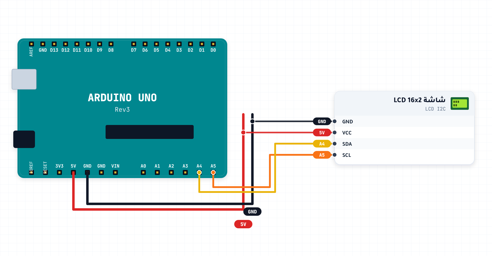

▶فيديو الشرح
نعرض رسالة ترحيبية ونصاً متحركاً على شاشة LCD تعمل بسلكين فقط (I2C).
1المكونات
ARDUINO UNOboardشاشة LCD 16x2LCD I2Cأسلاك توصيلJumper Wiresلوحة تجاربBreadboard
2مخطط التوصيل

اضغط على المخطط لتكبيره · نسخة SVG عالية الدقة
| القطعة | الطرف | يوصل إلى |
|---|---|---|
| شاشة LCD 16x2 | GND | GND |
| شاشة LCD 16x2 | VCC | 5V |
| شاشة LCD 16x2 | SDA | A4 |
| شاشة LCD 16x2 | SCL | A5 |
3الكود
المكتبات المطلوبة (من Arduino IDE ← Sketch ← Include Library ← Manage Libraries):
- LiquidCrystal I2C — Frank de Brabander
/* المشروع 15: شاشة عرض النصوص والبيانات (LCD 16x2 I2C) كتاب: 38 مشروع في شهر — لؤي النصري (@robotlouay) المكتبة: LiquidCrystal I2C (Frank de Brabander) التوصيل: VCC → 5V GND → GND SDA → A4 SCL → A5 إذا لم يظهر شيء: اضبط مقاومة التباين الزرقاء خلف الشاشة، أو جرّب العنوان 0x3F بدلاً من 0x27. */ #include <Wire.h> #include <LiquidCrystal_I2C.h> LiquidCrystal_I2C lcd(0x27, 16, 2); // العنوان، عدد الأعمدة، عدد الأسطر const char message[] = " Welcome to robotlouay - 38 projects in a month "; void setup() { lcd.init(); lcd.backlight(); lcd.setCursor(0, 0); lcd.print("Hello Arduino!"); } void loop() { static unsigned long lastScroll = 0; static int pos = 0; // السطر الثاني: نص متحرك كل 300ms if (millis() - lastScroll >= 300) { lastScroll = millis(); char window[17]; int len = strlen(message); for (int i = 0; i < 16; i++) window[i] = message[(pos + i) % len]; window[16] = '\0'; lcd.setCursor(0, 1); lcd.print(window); pos = (pos + 1) % len; } // عدّاد الثواني في نهاية السطر الأول lcd.setCursor(14, 0); unsigned long s = (millis() / 1000) % 100; if (s < 10) lcd.print('0'); lcd.print(s); }
4كيف يعمل؟
- lcd.init() تهيئ الشاشة
- setCursor(عمود، سطر) تحدد الموضع
- print() تكتب النص
- النص يتحرك كل 300ms
⚠ قبل توصيل الكهرباء: راجع كل سلك مع الجدول أعلاه، وتأكد من عدم وجود تماس بين 5V و GND. اختر اللوحة والمنفذ الصحيحين من قائمة Tools في Arduino IDE.